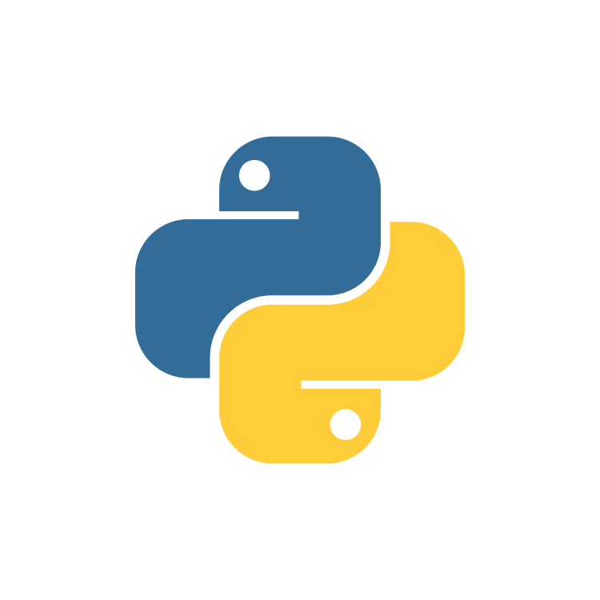

Projects

Developed a project that is filled with intriguing word puzzles,
where each level presents a unique challenge to test your
vocabulary skills and wit.

Increment/decrement numerical count with reset option. Lightweight, user-friendly interface. Easily integrate into web projects for tracking scores, quantities, or implementing interactive features.
I conceptualized and designed a scalable quiz app architecture,
integrating features like user authentication, question
generation, scoring, and result tracking. Continuously improved
based on feedback.

Led charity website dev with HTML, CSS, JS. Integrated Razorpay
for secure payments, Python backend. Scalable, tested for
reliability, impact.

Utilize SQL to analyze social media data from platforms like
Instagram to uncover user behavior, trending topics, and
engagement metrics.
Internships
-
The Sparks Foundation
-
Bharat Intern
I spearheaded the development of a charitable donation website,
utilizing HTML, CSS, and JavaScript. The integration of the
Razorpay API guaranteed secure payment processing. Collaborating
on system architecture and database schema, we crafted a scalable
platform capable of handling thousands of transactions daily.
Python backend logic ensured reliability, while rigorous testing
bolstered stability and user satisfaction, ultimately fostering
trust and making a significant social impact.
I developed a temperature converter tool, allowing seamless
conversion between Celsius and Fahrenheit scales. Utilizing HTML,
CSS, and JavaScript, the user-friendly interface ensures intuitive
operation. Through collaborative efforts, we refined the system
for optimal efficiency. The tool offers accurate conversions,
enhancing user experience and functionality.
About
I am a third-year computer science student at Guru Nanak Institutions,
Hyderabad, where I am learning the fundamentals of programming, data
structures, algorithms, and SQL. I have also completed multiple
certifications from prestigious institutions and companies, such as
Harvard University, Goldman Sachs, and JP Morgan Chase. I have gained
hands-on experience in web development through two internships at
Bharat Intern and The Sparks Foundation, where I worked on various
projects using Python, Java, and JavaScript. I am always in awe of the
change that technology drives in the world, and I am determined to
learn new skills and tools to create impactful web applications. My
goal is to become a proficient web developer and contribute to the
digital transformation of society.